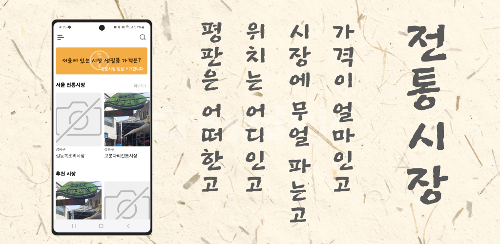
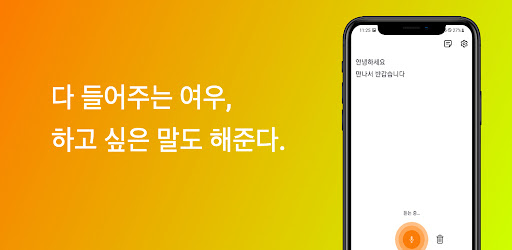
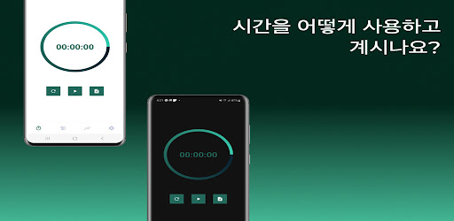

전통시장
서울의 다채로운 맛과 문화를 경험할 수 있는 전통시장을 소개하는 앱입니다. 사용자들에게 서울시 내 전통시장의 다양한 정보를 제공하여 손쉽게 찾아갈 수 있도록 도와줍니다.

서울의 다채로운 맛과 문화를 경험할 수 있는 전통시장을 소개하는 앱입니다. 사용자들에게 서울시 내 전통시장의 다양한 정보를 제공하여 손쉽게 찾아갈 수 있도록 도와줍니다.


일상을 효율적으로 관리하고 기록할 수 있는 앱입니다. 활동을 카테고리로 분류하고 목표를 설정하여 시간을 관리하고, 그래프와 통계를 통해 시간 분배를 파악할 수 있습니다.